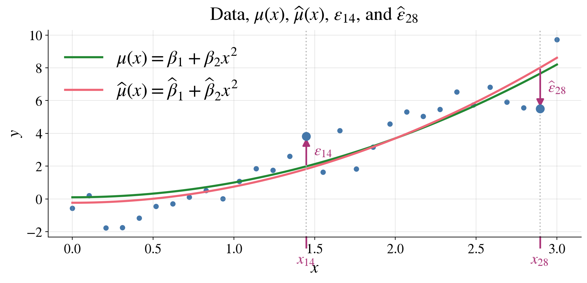
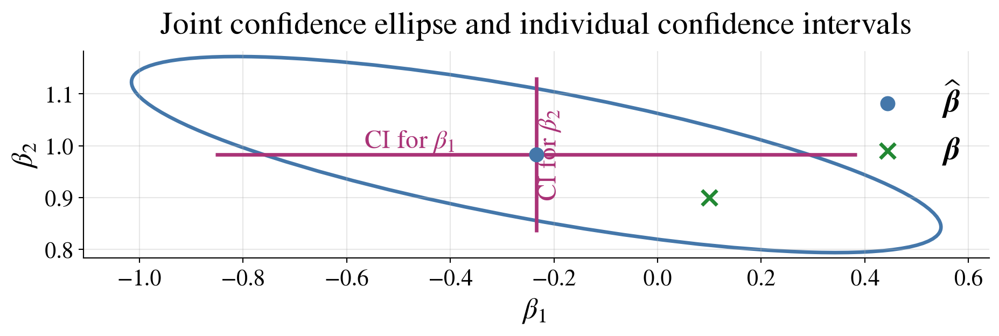
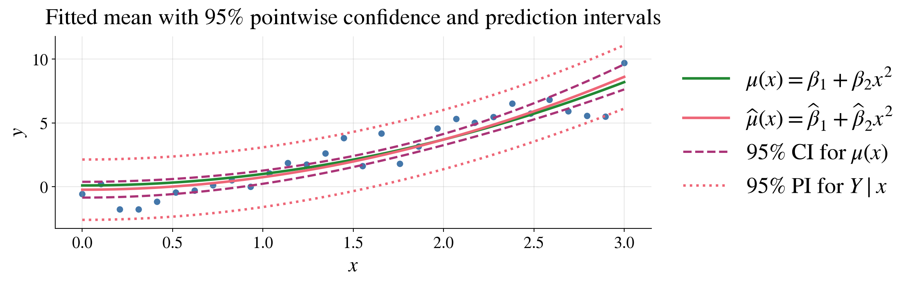
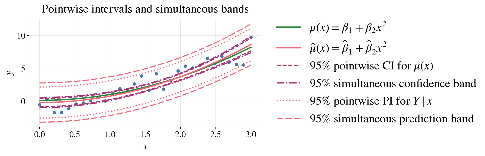
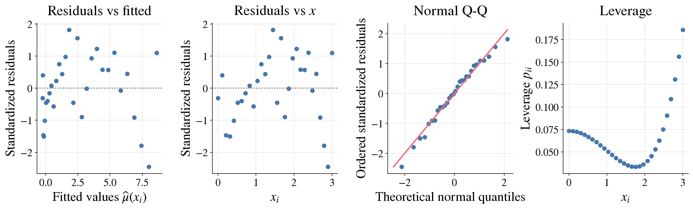
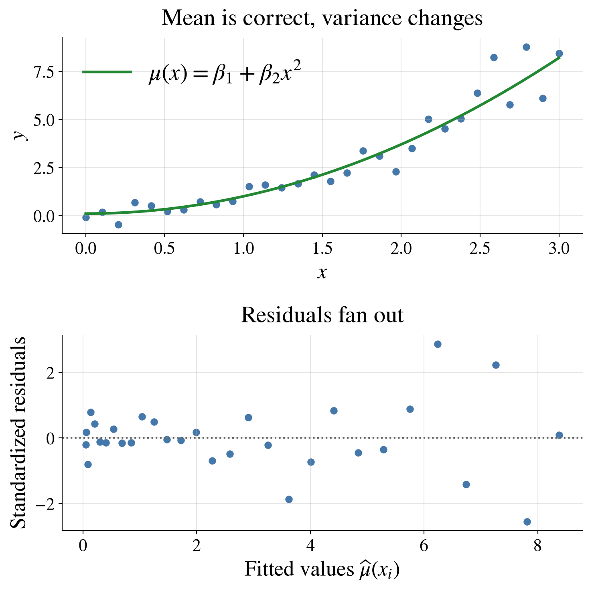
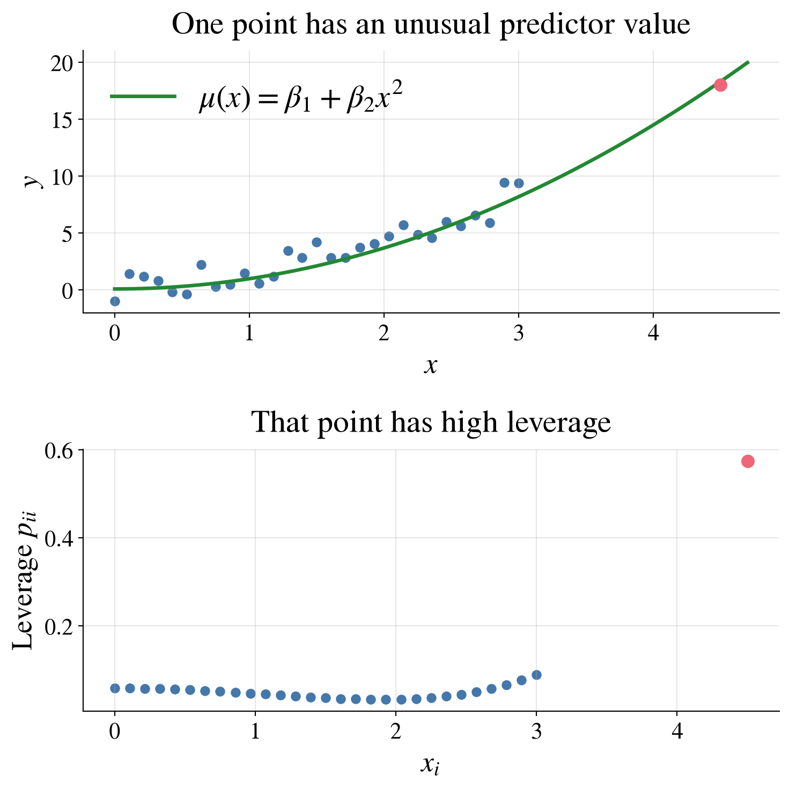
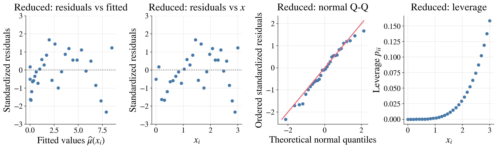
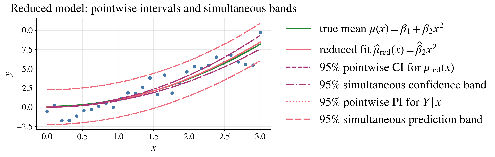

Linear Models
Casella & Berger Ch. 11
Test 2 on 4/7 on
Optimality of Estimators,
Hypothesis Testing, &
Ordinary Least Squares Through Inference
March 31, 2026
Now we move the situation where we have a
Response/Output/Dependent Variable \(Y\)
Explained/Predicted by a vector of Predictors/Explanatory Variables/Inputs/Indpendent Variables \(\vx\), where the \(x_j\) may be functions of other variables or each other
Types of linear models
Ordinary least squares (OLS) \(Y = \vx^\top \vbeta + \varepsilon\) with \(\Ex(\varepsilon) = 0\) and \(\cov(\varepsilon) = \sigma^2 \mI\)
One-way analysis of variance (ANOVA) \(Y_{ij} = \mu_i + \varepsilon_{ij}\) with \(\Ex(\varepsilon_{ij}) = 0\) and \(\cov(\varepsilon_{ij}) = \sigma^2 \mI\)
Logistic regression and other generalized linear models
Gaussian process regression
| Linear models | Population parameters | |
|---|---|---|
| Model | \(Y = \vx^\top \vbeta + \varepsilon\), \(\Ex(\varepsilon) = 0\), \(\var(\varepsilon) = \sigma^2\) \(\Ex(Y) = \vx^\top \vbeta =: \mu(\vx)\) |
\(Y \sim \Bern(p)\), \(Y \sim \Exp(\lambda)\), \(Y \sim \Norm(\mu,\sigma^2)\), … |
| Parameters | \(\vbeta \in \reals^d\) | \(\mu\), \(\sigma^2\), \(p\), \(\lambda\) |
| Fixed | \(\vx\) | |
| Random | \(Y\), \(\varepsilon\) | \(Y\) |
| Data | \((\vx_1,Y_1),\dots,(\vx_n,Y_n)\) | \(Y_1,\dots,Y_n\) |
| Model with data | \(Y_i = \vx_i^\top \vbeta + \varepsilon_i\) \(\underbrace{\vY}_{n \times 1} = \underbrace{\mX}_{n \times d}\, \underbrace{\vbeta}_{d \times 1} + \underbrace{\vveps}_{n \times 1}\) |
\(Y_i \sim \Bern(p)\), \(Y_i \sim \Exp(\lambda)\), \(Y_i \sim \Norm(\mu,\sigma^2)\), … |
| Not observable | \(\varepsilon_1,\dots,\varepsilon_n\) |
| Linear models | Population parameters | |
|---|---|---|
| Model | \(Y = \vx^\top \vbeta + \varepsilon\), \(\Ex(\varepsilon) = 0\), \(\var(\varepsilon) = \sigma^2\) \(\Ex(Y) = \vx^\top \vbeta =: \mu(\vx)\) |
\(Y \sim \Bern(p)\), \(Y \sim \Exp(\lambda)\), \(Y \sim \Norm(\mu,\sigma^2)\), … |
| Model with data | \(Y_i = \vx_i^\top \vbeta + \varepsilon_i\) \(\underbrace{\vY}_{n \times 1} = \underbrace{\mX}_{n \times d}\, \underbrace{\vbeta}_{d \times 1} + \underbrace{\vveps}_{n \times 1}\) |
\(Y_i \sim \Bern(p)\), \(Y_i \sim \Exp(\lambda)\), \(Y_i \sim \Norm(\mu,\sigma^2)\), … |
| Point estimators | \(\hbeta = (\mX^\top \mX)^{-1} \mX^\top \vY\), \(\hvY = \mX \hbeta\) | \(\barY\), \(S^2\), \(\hlambda_{\MLE}\), \(\hp_{\MLE}\), … |
| Confidence/ prediction regions for | \(\vbeta\), \(\mu(\vx)\), \(Y \mid \vx\) | \(\mu\), \(\sigma^2\), \(p\), \(\lambda\), \(Y\) |
(CB §11.3; WMS §11.3–11.4, 11.10–11.11)
Model: \(Y = \vx^\top \vbeta + \varepsilon \qquad\) with \(\Ex(\varepsilon)=0, \quad \var(\varepsilon)=\sigma^2\)
Model with data: \(\displaystyle \overbrace{\begin{pmatrix}Y_1 \\ Y_2 \\ \vdots \\ \vdots \\ Y_n\end{pmatrix}}^{\vY} = \overbrace{\begin{pmatrix} x_{11} & x_{12} & \cdots & x_{1d} \\ x_{21} & x_{22} & \cdots & x_{2d} \\ \vdots & \vdots & \ddots & \vdots \\ \vdots & \vdots & \ddots & \vdots \\ x_{n1} & x_{n2} & \cdots & x_{nd} \end{pmatrix}}^{\mX}\, \overbrace{\begin{pmatrix} \beta_1 \\ \beta_2 \\ \vdots \\ \beta_d \end{pmatrix}}^{\vbeta} + \overbrace{\begin{pmatrix} \varepsilon_1 \\ \varepsilon_2 \\ \vdots \\ \vdots \\ \varepsilon_n \end{pmatrix}}^{\vveps}\)
\[ \argmin_{\vb \in \reals^d} \lVert \vY - \mX \vb \rVert^2 = (\mX^\top \mX)^{-1} \mX^\top \vY =: \hvbeta \]
Let \(\hvbeta\) be defined as above, and let \(\vb\) be any other vector in \(\reals^d\): \[\begin{align*} \lVert \vY - \mX \vb \rVert^2 & = \lVert (\vY - \mX \hvbeta) + \mX (\hvbeta - \vb) \rVert^2 \\ & = \lVert \vY - \mX \hvbeta \rVert^2 + 2 (\hvbeta - \vb)^\top \class{alert}{\mX^\top (\vY - \mX \hvbeta)} + \lVert \mX (\hvbeta - \vb) \rVert^2 \\ & = \lVert \vY - \mX \hvbeta \rVert^2 + 2 (\hvbeta - \vb)^\top \class{alert}{\mX^\top (\vY - \mX (\mX^\top \mX)^{-1} \mX^\top \vY)} + \lVert \mX (\hvbeta - \vb) \rVert^2 \\ & = \lVert \vY - \mX \hvbeta \rVert^2 + 2 (\hvbeta - \vb)^\top \class{alert}{[\mX^\top \vY - \mX^\top \mX (\mX^\top \mX)^{-1} \mX^\top \vY]} + \lVert \mX (\hvbeta - \vb) \rVert^2 \\ & = \lVert \vY - \mX \hvbeta \rVert^2 + \lVert \mX (\hvbeta - \vb) \rVert^2 \ge \lVert \vY - \mX \hvbeta \rVert^2 \end{align*}\]
Furthermore
\(\hmu(\vx) := \vx^\top \hvbeta\) is an estimator of \(\mu(\vx) := \Ex(Y \mid \vx) = \vx^\top \vbeta\)
\(\hvY : = \mX \hvbeta = \underbrace{\mX (\mX^\top \mX)^{-1} \mX^\top}_{\href{https://en.wikipedia.org/wiki/Projection_matrix}{\text{projection matrix }} \mP} \vY\) is an estimator of \(\mu(\vX) = \Ex(\vY)\)
\(\mP\) is the projection matrix (also called the hat matrix) onto \[ \cc(\mX):= \text{ the column space of } \mX = \text{ the set of all linear combinations of the columns of } \mX = \{ \mX \vb : \vb \in \reals^d \} \] This means that
\(\hvveps : = \vY - \hvY = (\mI - \mP) \vY\) is the vector of residuals,
Recall that \(Y = \mX \vbeta + \vveps\), with \(\Ex(\vveps)=0, \ \cov(\vveps)=\sigma^2 \mI\), where \(\mX\) is fixed and of full column rank
\[\begin{align*} \hvbeta & := (\mX^\top \mX)^{-1} \mX^\top \vY = (\mX^\top \mX)^{-1} \mX^\top \left(\mX \vbeta + \vveps\right) = \vbeta + (\mX^\top \mX)^{-1} \mX^\top \vveps \\ \implies \Ex(\hvbeta) & = \vbeta \qquad \text{so $\hvbeta$ is \class{alert}{unbiased}} \\[12pt] \hmu(\vx) & := \vx^\top \hvbeta = \vx^\top \vbeta + \vx^\top (\mX^\top \mX)^{-1} \mX^\top \vveps \\ \implies \Ex(\hmu(\vx)) &= \vx^\top \vbeta = \mu(\vx) \qquad \text{so $\hmu(\vx)$ is \class{alert}{unbiased}} \\[12pt] \hvveps &: = \underbrace{\vY}_{\text{data}} - \underbrace{\hvY}_{\text{fit}} = (\mI-\mP)\vY, \qquad \mP := \mX(\mX^\top \mX)^{-1}\mX^\top \\ & = (\mI-\mP)(\mX \vbeta + \vveps) = (\mI-\mP)\vveps \qquad \text{since $(\mI-\mP)\mX = \mzero$} \\ \implies \Ex(\hvveps) & = \vzero \end{align*}\]
Since \(\hvveps = (\mI-\mP)\vveps\), it follows that \[\begin{equation*} \Ex\bigl(\lVert \hvveps \rVert^2\bigr) = \Ex\bigl(\vveps^\top (\mI-\mP)\vveps\bigr) \\ = \sigma^2 \trace(\mI-\mP) = \sigma^2 (n - \trace(\mP)) \end{equation*}\]
Now \(\mP\) is a projection matrix onto \(\cc(\mX)\), it has eigenvalues of \(0\) and \(1\) only, so \[ \trace(\mP)= \text{ sum of the eigenvalues of } \mP = \rank(\mP)=\rank(\mX)=d \]
Therefore \(\Ex\bigl(\lVert \hvveps \rVert^2\bigr) = \sigma^2 (n-d)\) and so \[\begin{multline*} S^2 := \frac 1{n-d} \sum_{i=1}^{n} \lvert Y_i - \vx_i^\top \hvbeta \rvert^2 = \frac{\lVert \hvveps \rVert^2}{n-d} = \frac{\lVert (\mI-\mP)\vY \rVert^2 }{n-d} = \frac{\lVert (\mI-\mP)\vveps \rVert^2 }{n-d} \\ \text{is an \class{alert}{unbiased} estimator of $\sigma^2$} \end{multline*}\]
(CB §11.3; WMS §11.4–11.7, 11.12–11.13)
So far, we have only used the assumptions that
Going forward, we assume that \(\vveps \sim \Norm(\vzero,\sigma^2 \mI)\). This allows us to
Since a linear combination of normal random variables is normal, the following data-based quantities are all normally distributed:
\(\vY = \mX \vbeta + \vveps \sim \Norm(\mX\vbeta,\sigma^2 \mI)\)
\(\hvbeta = (\mX^\top \mX)^{-1} \mX^\top \vY = (\mX^\top\mX)^{-1}\mX^\top (\mX \vbeta + \vveps) = \vbeta + (\mX^\top\mX)^{-1}\mX^\top\vveps \sim \Norm\!\left(\vbeta,\sigma^2 (\mX^\top \mX)^{-1}\right)\)
\(\hmu(\vx) = \vx^\top \hvbeta = \mu(\vx) + \vx^\top (\mX^\top\mX)^{-1}\mX^\top\vveps \sim \Norm\!\left(\mu(\vx),\sigma^2 \vx^\top (\mX^\top \mX)^{-1} \vx\right)\)
\(\hvveps = (\mI-\mP)\vveps \sim \Norm(\vzero,\sigma^2 (\mI-\mP))\)

From the normal distribution of \(\hvbeta\), it follows that \[\frac{ (\hvbeta-\vbeta)^\top (\mX^\top\mX) (\hvbeta-\vbeta) }{\sigma^2} \sim \chi^2_d \]
Also, \(\hvbeta = \vbeta + (\mX^\top \mX)^{-1}\mX^\top \vveps = \vbeta + (\mX^\top \mX)^{-1}\mX^\top \mP \vveps\) since \(\mP \mX = \mX\), so \(\hvbeta\) depends only on \(\mP\vveps\)
Moreover, \(S^2 = \lVert(\mI - \mP)\vveps\rVert^2/(n-d)\), so \(S^2\) depends only on \((\mI-\mP)\vveps\)
Since \(\hvbeta\) and \(S^2\) depend on orthogonal projections of \(\vveps\) onto \(\cc(\mX)\) and \(\cc(\mX)^\perp\), respectively, and \(\vveps\) is Normal, \(\hvbeta\) and \(S^2\) are independent.
Hence, replacing \(\sigma^2\) with \(S^2\) gives \[ \frac{ (\hvbeta-\vbeta)^\top(\mX^\top\mX)(\hvbeta-\vbeta) }{dS^2} \sim F_{d,n-d} \]
Therefore
\[ (\hvbeta-\vbeta)^\top (\mX^\top\mX) (\hvbeta-\vbeta) \le d S^2 F_{d,n-d,\alpha}, \quad \text{where } \Prob(F_{d,n-d} > F_{d,n-d,\alpha}) = \alpha \]
defines a \(\class{alert}{(1-\alpha)\text{ confidence ellipsoid for }\vbeta}\) centered at \(\hvbeta\)
\(\exstar\)Show that the variance of \(\hbeta_j\) is \(\sigma^2\bigl[(\mX^\top\mX)^{-1}\bigr]_{jj}\), where \(\bigl[(\mX^\top\mX)^{-1}\bigr]_{jj}\) denotes the \(j\)th diagonal entry of \((\mX^\top\mX)^{-1}\)
Since \(\hvbeta \sim \Norm\!\left( \vbeta,\; \sigma^2(\mX^\top\mX)^{-1} \right)\), it follows that for each \(j=1,\dots,d\),
\[ \hbeta_j \sim \Norm\!\left( \beta_j,\; \sigma^2\bigl[(\mX^\top\mX)^{-1}\bigr]_{jj} \right) \]
where \(\bigl[(\mX^\top\mX)^{-1}\bigr]_{jj}\) denotes the \(j\)th diagonal entry of \((\mX^\top\mX)^{-1}\). Replacing \(\sigma^2\) by \(S^2\) gives
\[\begin{gather*} \frac{ \hbeta_j-\beta_j }{ S\sqrt{\bigl[(\mX^\top\mX)^{-1}\bigr]_{jj}} } \sim t_{n-d} \\ \hbeta_j \pm t_{n-d,\alpha/2} \; S\sqrt{\bigl[(\mX^\top\mX)^{-1}\bigr]_{jj}} \; \text{ is an }\class{alert}{(1-\alpha)\text{ confidence interval for }\beta_j} \text{ for each } j=1,\dots,d \end{gather*}\]
\[\begin{gather*} (\hvbeta-\vbeta)^\top (\mX^\top\mX) (\hvbeta-\vbeta) \le dS^2F_{d,n-d,\alpha} \quad \text{is a joint confidence region \class{alert}{for the whole vector $\vbeta$}} \\ \hbeta_j \pm t_{n-d,\alpha/2} \; S\sqrt{\bigl[(\mX^\top\mX)^{-1}\bigr]_{jj}}, \; j=1,\dots,d, \quad \text{are \class{alert}{individual confidence intervals for each $\beta_j$}} \end{gather*}\]

Joint confidence for \(\vbeta\) is not the same as simultaneous confidence for all \(\beta_j\)
The confidence elliposoid for \(\vbeta\) and the individual confidence interval for \(\beta_1\) both include \(\beta_1 = 0\) so one might question whether there should be a constant term in the model
If we form separate \((1-\alpha)\) confidence intervals for each \(\beta_j\), the probability that of them are simultaneously correct is generally less than \((1-\alpha)\)
So:
Recall \(\mu(\vx)=\vx^\top\vbeta\), \(\hmu(\vx)= \mu(\vx) + \vx^\top (\mX^\top\mX)^{-1}\mX^\top\vveps \sim \Norm\!\left(\mu(\vx),\sigma^2 \vx^\top (\mX^\top \mX)^{-1} \vx\right)\)
Replacing \(\sigma^2\) by \(S^2\) gives
\[ \frac{ \hmu(\vx)-\mu(\vx) }{ S \sqrt{\vx^\top(\mX^\top\mX)^{-1}\vx} } \sim t_{n-d} \]
Therefore
\[ \hmu(\vx) \pm t_{n-d,\alpha/2} \; S \sqrt{\vx^\top(\mX^\top\mX)^{-1}\vx} \]
is a \((1-\alpha)\) confidence interval for \(\mu(\vx)\)
A new observation, \(Y \mid \vx = Y_{\text{new}}=\vx^\top\vbeta+\varepsilon_{\text{new}}\), depends both on
Predicting \(Y_{\text{new}}\) by \(\hmu(\vx)\) has uncertainty coming both from the uncertainty in the model parameters and the new error term:
\[\begin{align*} Y_{\text{new}}-\hmu(\vx) & = \bigl(\vx^\top\vbeta+\varepsilon_{\text{new}}\bigr) - \bigl(\vx^\top\vbeta + \vx^\top (\mX^\top\mX)^{-1}\mX^\top\vveps \bigr) \\ & = \varepsilon_{\text{new}} - \vx^\top (\mX^\top\mX)^{-1}\mX^\top\vveps\\ & \sim \Norm\!\left(0,\; \sigma^2\left( 1+\vx^\top(\mX^\top\mX)^{-1}\vx \right)\right) \qquad \text{since $\varepsilon_{\text{new}}$ is independent of $\vveps$} \end{align*}\]
Replacing \(\sigma^2\) by \(S^2\) gives a \(t\)-distribution for the standardized prediction error. A \((1-\alpha)\) prediction interval for \(Y_{\text{new}}\) is then given by
\[ Y_{\text{new}} \in \hmu(\vx) \pm t_{n-d,\alpha/2} S \sqrt{ 1+\vx^\top(\mX^\top\mX)^{-1}\vx } \]
Confidence interval for mean response:
\[ \hmu(\vx) \pm t_{n-d,\alpha/2} S \sqrt{\vx^\top(\mX^\top\mX)^{-1}\vx} \]
Prediction interval for a new observation:
\[ \hmu(\vx) \pm t_{n-d,\alpha/2} S \sqrt{ 1+\vx^\top(\mX^\top\mX)^{-1}\vx } \]

Prediction intervals are wider than confidence intervals
These pointwise intervals exhibit uncertainty at each fixed \(\vx\), not simultaneously for all \(\vx\) at once
Pointwise intervals control uncertainty at one fixed \(\vx\); “\(\forall \vx\)” is outside the probability statement
A band controls uncertainty simultaneously for all \(\vx\); “\(\forall \vx\)” is inside the probability statement
\[\begin{multline*} \bigl|\hmu(\vx)-\mu(\vx)\bigr| = \bigl|\vx^\top(\hvbeta-\vbeta)\bigr| = \bigl|[(\mX^\top\mX)^{-1/2}\vx]^\top [(\mX^\top\mX)^{1/2} (\hvbeta-\vbeta)]\bigr| \\ \le \sqrt{\vx^\top(\mX^\top\mX)^{-1}\vx} \sqrt{(\hvbeta-\vbeta)^\top(\mX^\top\mX)(\hvbeta-\vbeta)} \quad \text{for all }\vx \qquad \text{by Cauchy--Schwarz} \end{multline*}\]
So the confidence ellipse,\((\hvbeta-\vbeta)^\top(\mX^\top\mX)(\hvbeta-\vbeta) \le dS^2F_{d,n-d,\alpha}\) with probability \(1-\alpha\), implies the following \((1-\alpha)\) confidence band:
\[ \mu(\vx) \in \hmu(\vx) \pm \sqrt{dF_{d,n-d,\alpha}}\; S\sqrt{\vx^\top(\mX^\top\mX)^{-1}\vx} \qquad \text{for all }\vx \]
Similarly, a \((1-\alpha)\) prediction band is
\[ Y_{\text{new}} \in \hmu(\vx) \pm \sqrt{dF_{d,n-d,\alpha}}\; S\sqrt{1+\vx^\top(\mX^\top\mX)^{-1}\vx} \qquad \text{for all }\vx \]
Pointwise intervals use the \(t\) multiplier because they control one fixed \(\vx\)
Simultaneous bands use the larger \(\sqrt{dF_{d,n-d,\alpha}}\) multiplier because they must work for all \(\vx\) at once

Simultaneous bands are wider than pointwise intervals because they must cover \(\vx\) values at once, not just one fixed \(\vx\)
Let \(\mX \in \mathbb{R}^{n \times d}\) have full column rank, and write its QR decomposition as
Then it follows that
Least squares estimate: \(\hvbeta = \mR^{-1} (\mQ^\top \vY)\)
Projection matrix: \(\mP = \mQ \mQ^\top\)
Fitted values \(\hvY = \mQ (\mQ^\top \vY)\)
Residuals: \(\hvveps = \vY - \hvY\)
Covariance of \(\hvbeta\): \(\cov(\hvbeta) = \sigma^2 \mR^{-1} \mR^{-\top}\)
Variance of \(\hmu(\vx)\): \(\var(\hmu(\vx)) = \sigma^2 \lVert (\mR^{-\top} \vx)\rVert^2\)
(CB §11.3; WMS §11.14)
Up to this point, we have assumed that the chosen linear model is appropriate.
In practice, we should also check whether
The main questions are:
Fitted values \(\hvY = \mX \hvbeta = \mP \vY\) are the predicted mean responses
Residuals \(\hvveps = \vY - \hvY = (\mI - \mP)\vY\) are the differences between observed and fitted values
Under the normal linear model, the fitted values and residuals are independent; more generally, they are uncorrelated. A good first diagnostic is a plot of residuals versus fitted values.
If the linear model is appropriate, then the residual plot should show
A residual plot should look like random noise around zero, not like a pattern.
Because the variability of \(\hat\varepsilon_i\) depends on the leverage of observation \(i\), it is useful to scale residuals.
A standardized residual is
\[ r_i = \frac{\hat\varepsilon_i}{S\sqrt{1-h_{ii}}}, \]
where \(h_{ii}\) is the \(i\)th diagonal entry of the projection (hat) matrix \(\mP\) (using \(h_{ii}\) rather than \(p_{ii}\) since \(p_i\) is common for probabilities))
Large values of \(|r_i|\) indicate observations whose responses are unusual relative to the fitted model.
As a rough rule of thumb:
Let \(r_1,\dots,r_n\) be standardized residuals, and let \(r_{(1)} \le \cdots \le r_{(n)}\) denote the sorted values.
Define plotting positions and corresponding normal quantiles: \[ p_i = \frac{i - 1/2}{n}, \qquad i=1,\dots,n \qquad z_i = \Phi^{-1}(p_i), \qquad i=1,\dots,n \]
Plot the points \((z_i, r_{(i)})\), \(i=1,\dots,n\)
P–P plot would plot \[ \bigl(p_i, \Phi(r_{(i)})\bigr) \]
👉 Q–Q plots are preferred because they better reveal tail departures from Normality
The fitted values satisfy
\[ \hvY = \mP \vY, \qquad \mP := \mX(\mX^\top \mX)^{-1}\mX^\top \]
The matrix \(\mP\) is sometimes called the hat matrix because it puts a “hat” on \(\vY\)
Its diagonal entries \(h_{ii} = (\mP)_{ii} = \|\vQ_{i,\cdot}\|^2\), where \(\mX = \mQ \mR\) is the QR decomposition of \(\mX\), are called the leverages

Here the diagnostics look pretty good:
The residuals show no strong pattern and roughly constant spread across fitted values and \(x\)
The normal Q-Q plot shows only mild departures from normality
The leverage plot shows that no observations have unusually high leverage
Suppose the mean model is still correct,
\[ Y_i = \beta_1 + \beta_2 x_i^2 + \varepsilon_i, \]
but the error variance is no longer constant:
\[ \varepsilon_i \sim \Norm(0,\sigma_i^2), \qquad \sigma_i = 0.25 + 0.35 x_i \]
So:
This violates the constant-variance assumption

A funnel shape in the residual plot suggests that the variance is changing with the mean or with \(x\)
Possible responses include transforming the response, modeling the variance, or using weighted least squares
Suppose the mean model is still
\[ Y_i = \beta_1 + \beta_2 x_i^2 + \varepsilon_i, \qquad \varepsilon_i \sim \Norm(0,\sigma^2), \]
but now one observation has a predictor value far from the rest
For example, most of the data may have \(0 \le x_i \le 3\), but one point might have \(x_i = 4.5\)
Then:

A point can have a large effect on the fitted model because its predictor value is unusual, even if its residual is not especially large.
Common diagnostic plots include:
Standardized residuals versus fitted values checks linearity and constant variance
Standardized residuals versus a predictor can reveal patterns that are easier to see when there is one main predictor
Normal Q-Q plot checks approximate normality of residuals
Leverage plot checks which observations have unusual predictor values
If diagnostics reveal problems, one might
Diagnostics do not automatically tell us the right fix, but they do tell us where the model may be going wrong
(CB §11.4; WMS §11.15)
Model selection aims to balance:
Suppose we compare two nested models:
Since the full model has more predictors, we always have
\[ \RSS_1 \le \RSS_0 \]
The question is whether the reduction in RSS is large enough to justify the extra parameters.
To test whether the additional predictors in the full model are needed, use
\[ F = \frac{(\RSS_0-\RSS_1)/(d_1-d_0)}{\RSS_1/(n-d_1)} \]
Under the null hypothesis that the extra coefficients are all zero, and assuming the model assumptions hold, we have \(\RSS_0-\RSS_1\) and \(\RSS_1\) are independent scaled chi-square random variables, so
\[ F \sim F_{d_1-d_0,\;n-d_1} \]
A natural way to simplify a model is to examine individual coefficients:
This provides a useful first pass for identifying weak predictors
However, caution is needed:
Model selection should be based on the model as a whole, not just individual coefficients
To measure goodness of fit, we decompose the variability in the response:
\[\begin{gather*} \underbrace{\sum_{i=1}^n (Y_i - \barY)^2}_{\SST = \text{total sum of squares}} = \underbrace{\sum_{i=1}^n (\hY_i - \barY)^2}_{\SSR = \text{regression sum of squares}} + \underbrace{\sum_{i=1}^n (Y_i - \hat{Y}_i)^2}_{\RSS = \text{residual sum of squares}} \\ R^2 = \frac{\SSR}{\SST} = 1 - \frac{\RSS}{\SST} \in [0,1] \end{gather*}\]
Interpreted as the proportion of variability in \(Y\) explained by the model
Larger \(R^2\) indicates better fit, but it has a major drawback:
Adjusted \(R^2\) corrects for this by penalizing model complexity:
\[ R^2_{\text{adj}} = 1-\frac{\RSS/(n-d)}{\SST/(n-1)} \]
When comparing regression models:
A good regression model should fit well, make scientific sense, and generalize to new data.
\[ y = 0.10 + 0.90 x^2 + \varepsilon, \qquad \varepsilon \sim \Norm(\vzero, 1.00\,\mI) \]
The \(p\)-value is not small, so there is no compelling evidence that the intercept is needed
| Estimate | Std. Error | t value | p value | CI Lower | CI Upper | |
|---|---|---|---|---|---|---|
| Intercept | -0.2341 | 0.3021 | -0.7749 | 0.4449 | -0.8529 | 0.3847 |
| x^2 | 0.9830 | 0.0732 | 13.4323 | 0.0000 | 0.8331 | 1.1329 |
The confidence interval for the intercept includes 0, suggesting it may not be necessary, while the interval for the \(x^2\) term is clearly away from 0, indicating it is important
| Model | Parameters (d) | RSS |
|---|---|---|
| Reduced (no intercept) | 1 | 35.512100 |
| Full | 2 | 34.766600 |
The RSS for the full model is not much smaller than the RSS for the reduced model, suggesting that the intercept may not be needed
| Quantity | Value |
|---|---|
| F statistic | 0.600400 |
| Numerator df (d_full − d_reduced) | 1.000000 |
| Denominator df (n − d_full) | 28.000000 |
| p-value | 0.444900 |
| Metric | Value |
|---|---|
| R^2 (full model) | 0.865700 |
| Adjusted R^2 (full model) | 0.860900 |
| Uncentered R^2 (reduced model, no intercept) | 0.927300 |
For models without an intercept, we use the uncentered \(R^2\):
\[ R^2_{\text{unc}} = 1 - \frac{\sum_{i=1}^n (Y_i - \hat{Y}_i)^2}{\sum_{i=1}^n Y_i^2} \]


Because the reduced model has only one regression parameter, the “simultaneous” and “pointwise” intervals are the same in this case
(CB §??; WMS §??)
So far, we modeled relationships with quantitative predictors
Now we consider a categorical predictor
Do different groups have different means?
\(Y_{ij}\), \(i=1,\ldots,k,\; j=1,\ldots,n_i\) comes from group \(i\) and IID observation \(j\) in that group
Total sample size is \(n = \sum_{i=1}^k n_i\)
Compare the group means, \(\mu_i = \Ex(Y_{ij})\), \(i=1,\ldots,k\)
\[ Y_{ij} = \mu_i + \varepsilon_{ij}, \qquad \Ex(Y_{ij} = \mu_i, \quad \varepsilon_{ij} \sim \Norm(0,\sigma^2), \quad \text{independent} \]
\[ H_0: \mu_1 = \mu_2 = \cdots = \mu_k, \qquad H_a: \text{not all } \mu_i \text{ are equal} \]
\[ \text{Group: } \barY_i = \frac{1}{n_i} \sum_{j=1}^{n_i} Y_{ij}, \, i=1, \ldots, k, \qquad \text{Overall: } \barY = \frac{1}{n} \sum_{i=1}^k \sum_{j=1}^{n_i} Y_{ij} \]
\[\begin{align*} \SST &= \SSB + \SSW \\ \text{Sum of Squares Total ($\SST$)} & = \sum_{i=1}^k \sum_{j=1}^{n_i} (Y_{ij} - \barY)^2 \\ & \qquad \qquad \text{measures how spread out all observations are} \\ \text{Sum of Squares Between ($\SSB$)} & = \sum_{i=1}^k n_i (\barY_i - \barY)^2 \\ & \qquad \qquad \text{measures how spread out the group means are} \\ \text{Sum of Squares Within ($\SSW$)} & = \sum_{i=1}^k \sum_{j=1}^{n_i} (Y_{ij} - \barY_i)^2 \\ & \qquad \qquad \text{measures how spread out the observations are within each group} \end{align*}\]
Compare signal (between) vs noise (within)
\[ k - 1 \]
\[ n - k \]
\[ n - 1 \]
\[ \text{MSB} = \frac{\text{SSB}}{k-1} \]
\[ \text{MSW} = \frac{\text{SSW}}{n-k} \]
\[ F = \frac{\text{MSB}}{\text{MSW}} \]
\[ F \sim F_{k-1,\,n-k} \]
Large \(F\):
Small \(F\):
Important:
ANOVA detects differences, not which groups differ
| Source | Sum of Squares | df | Mean Square |
|---|---|---|---|
| Between groups | SSB | \(k-1\) | MSB |
| Within groups | SSW | \(n-k\) | MSW |
| Total | SST | \(n-1\) |
One-way ANOVA compares multiple means
Uses variance decomposition:
Leads to a single global test
How ANOVA connects to regression
Dummy variables and design matrices
Identifying which groups differ
© 2026 Fred J. Hickernell · Illinois Tech · Linear Models · MATH 563 — Mathematical Statistics Website · \(\exstar\) = exercise